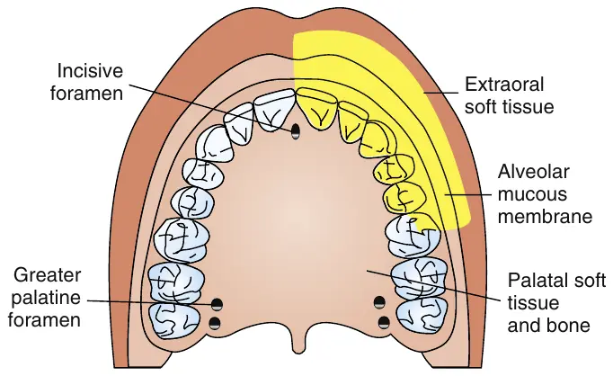
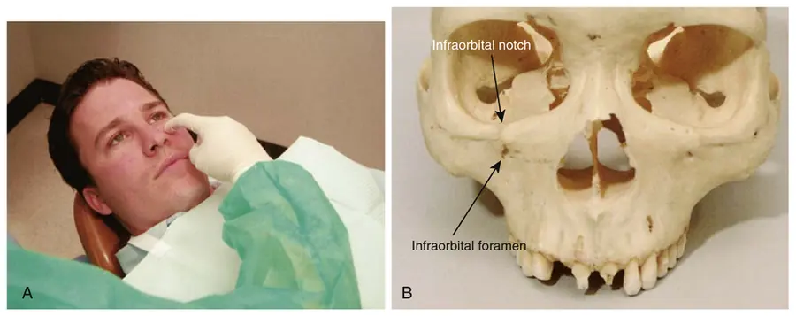

نسخه استخراجشده؛ ترجمه یا تأیید علمی انجام نشده است. وضعیت: captured
بیمار ۳۰ سالهای برای ترمیم سانترال، لترال و کانین بالا سمت چپ آمده است. بلاک ASA (آلوئولار فوقانی قدامی) را در نظر داری، ولی دستیار از نزدیکی سوزن به چشم نگران است. کدام عصبها در این ناحیهاند و چه چیزی بیحس میشود؟

عصب ماگزیلاری (V2) وقتی در شیار و کانال اینفرااوربیتال است، عصب اینفرااوربیتال نام دارد. عصب ASA حدود ۶ تا ۱۰ میلیمتر پیش از سوراخ اینفرااوربیتال از آن جدا میشود، در دیوارهی قدامی سینوس ماگزیلاری پایین میآید و پالپ سانترال، لترال و کانین و بافتهای باکال آنها را عصبدهی میکند. ASA با MSA ارتباط دارد.
عصب اینفرااوربیتال پس از خروج از سوراخ، پوست پلک پایین، کنارهی بینی و پوست و مخاط لب بالا را عصبدهی میکند. بیحسی این سه ناحیه یعنی عصب اینفرااوربیتال گرفته است، نه لزوماً دندانها. بهمعنای دقیق، «بلاک اینفرااوربیتال» فقط بافت نرم صورت را میگیرد و تزریقی که دندانها را بیحس میکند بلاک ASA است؛ در بخش هر دو نام بهکار میرود.
نقطهی ورود: عمق وستیبول روی پرمولر اول. از روی هر دندانی از پرمولر دوم تا سانترال میتوان به سوراخ رسید، ولی پرمولر اول معمولاً کوتاهترین مسیر را دارد.

پیش از تزریق، یک انگشت را روی سوراخ و انگشت دیگر را روی نقطهی ورود در عمق وستیبول بگذار و فاصلهی آنها را تخمین بزن؛ این تقریبی از عمق نفوذ سوزن است.
نکتهی طلایی: ترس از آسیب به چشم بیپایه است. سوزن پیش از رسیدن به حدقه به لبهی استخوانی سقف سوراخ میخورد و همین تماس جلوی پیشروی بیشتر را میگیرد.